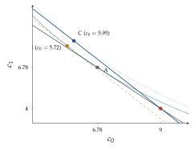

1.4. A change in the interest rate#
1.4.1. Two effects#
When \(r\) rises, the budget line pivots through the endowment and becomes steeper. Two things change at once.
Substitution. Today’s consumption becomes dearer in terms of tomorrow’s, so she wants to shift consumption to tomorrow.
Income. A lender earns more on her saving, so she is richer; a borrower pays more on his loan, so he is poorer.
To separate them, write the budget in tomorrow’s pounds: \((1+r)c_0+c_1=(1+r)x_0+x_1\equiv m\). Today’s consumption has price \(P=1+r\), and \(m\) is the future value of income, which itself depends on \(r\). Let \(c_0^*(P,m)\) be the optimal \(c_0\) and \(h_0(P,v)\) the compensated (Hicksian) demand: the cheapest \(c_0\) that reaches utility \(v\) at price \(P\).
Theorem 1.2 (Slutsky equation with an endowment)
At the optimum, with \(v\) the utility reached and \(s_0^*=x_0-c_0^*\),
Proof strategy (Theorem 1.2)
A change in \(r\) moves both the price \(P\) and the income \(m\). Split it into those two channels, then apply the ordinary Slutsky equation to the price channel. The only new feature is that income rises by \(x_0\) for each unit rise in \(P\), because the consumer sells her endowment at the new price.
Proof of Theorem 1.2
Step 1: two channels. Since \(dP/dr=1\) and \(dm/dr=x_0\),
Step 2: the ordinary Slutsky equation. Let \(e(P,v)\) be the least income needed to reach \(v\) at price \(P\). By definition \(h_0(P,v)=c_0^*\big(P,e(P,v)\big)\). Differentiating in \(P\),
and \(\partial e/\partial P=h_0=c_0^*\) (Shephard’s lemma).
Why this step?
Raising the price of \(c_0\) by a little raises the cost of the cheapest plan by the amount of \(c_0\) it buys; the change in the plan itself has only a second-order effect on cost, because the plan was cheapest.
So \(\partial c_0^*/\partial P=\partial h_0/\partial P-c_0^*\,\partial c_0^*/\partial m\).
Step 3: combine. Substituting into Step 1 gives \(dc_0^*/dr=\partial h_0/\partial P+(x_0-c_0^*)\,\partial c_0^*/\partial m\). The compensated demand slopes down, \(\partial h_0/\partial P<0\), since the indifference curves are strictly convex.
Signing the effects. If \(c_0\) is a normal good, \(\partial c_0^*/\partial m>0\). Then:
when \(r\) rises |
substitution on \(c_0\) |
income on \(c_0\) |
total on \(c_0\) |
|---|---|---|---|
lender (\(s_0^*>0\)) |
\(-\) |
\(+\) |
ambiguous |
borrower (\(s_0^*<0\)) |
\(-\) |
\(-\) |
\(-\) |
A borrower unambiguously consumes less today, so borrows less. A lender’s saving may rise or fall: the supply of saving can slope either way, just as labour supply can bend backwards.
Example 1.4 (Alice and Bob when \(r\) rises to \(0.5\))
With \(u=\sqrt c\), the Euler equation gives \(c_1=\big(\delta(1+r)\big)^2c_0\), so \(c_0^*=W/\big(1+\delta^2(1+r)\big)\).
Alice. At \(r=0.5\), \(W=9+4/1.5=11.67\) and \(c_0^*=11.67/1.96=5.95\). Holding her utility at \(4.69\), the compensated plan has \(c_0=5.72\). So the substitution effect is \(5.72-6.78=-1.06\) and the income effect \(5.95-5.72=+0.23\). Substitution wins: she saves more, \(3.05\) instead of \(2.22\).
Bob. His substitution effect is the same, since he started at the same plan. But \(W=3+11.5/1.5=10.67\), so \(c_0^*=5.44\): the income effect, \(-0.28\), pushes the same way. His borrowing falls from \(3.78\) to \(2.44\).


Fig. 1.2 Alice when \(r\) rises from \(0.25\) (grey line) to \(0.5\) (blue line). A to H: the substitution effect, along her old indifference curve at the new slope (dashed). H to C: the income effect; as a lender she is richer.#
1.4.2. Who gains when rates rise?#
Proposition 1.2 (A lender stays a lender)
Suppose that at rate \(r\) the consumer’s best plan has \(s_0^*>0\), and the rate rises to \(r'>r\). Then at \(r'\) she still lends, and she is strictly better off.
Proof strategy (Proposition 1.2)
Use revealed preference (T3): compare which plans were affordable before and after the change, without computing anything.
Proof of Proposition 1.2
Step 1: her old plan is still affordable. Both budget lines pass through the endowment, and the new one is steeper. To the left of the endowment (\(c_0<x_0\)) the new line lies above the old one, so her old plan \(c^*\) lies strictly inside the new budget set.
Why this step?
Saving \(s_0>0\) now buys \((1+r')s_0>(1+r)s_0\) tomorrow.
Step 2: she is strictly better off. Some plan on the new line has more of both goods than \(c^*\), so the new optimum is strictly better than \(c^*\).
Step 3: she does not switch to borrowing. To the right of the endowment the new line lies below the old one, so every borrowing plan affordable at \(r'\) was affordable at \(r\), and she chose \(c^*\) instead. By uniqueness of the optimum (Theorem 1.1), each of them is strictly worse than \(c^*\), and so strictly worse than the new optimum. The same holds for the endowment itself.
Common mistake
The argument does not run in reverse for a borrower. When \(r\) rises, his old plan becomes unaffordable, so he may be worse off; but if the rise is large enough he may switch to lending, and then he can end up better off. Whether a borrower gains from a rate rise depends on whether he switches.